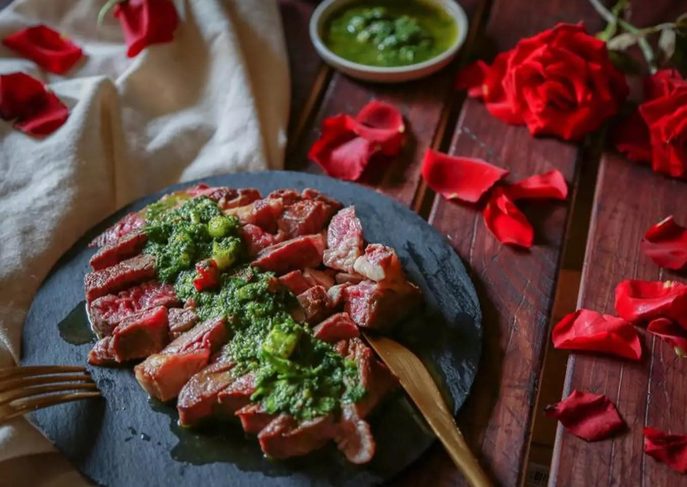
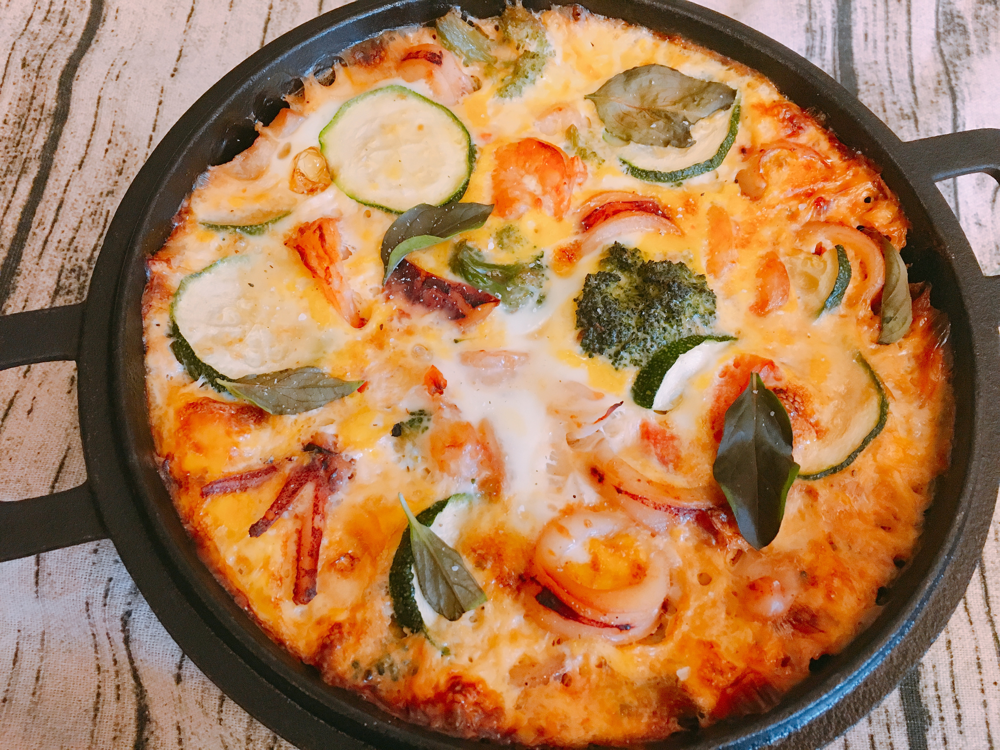
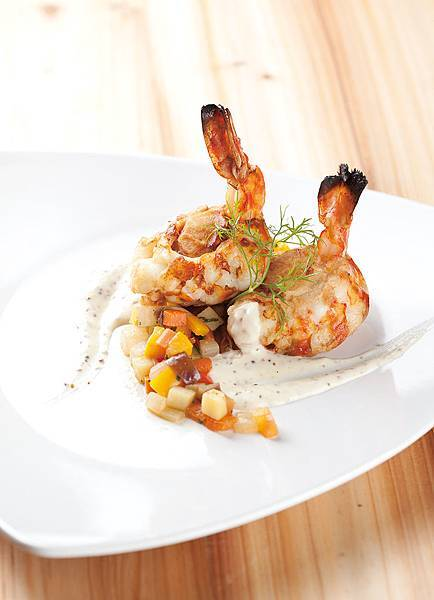
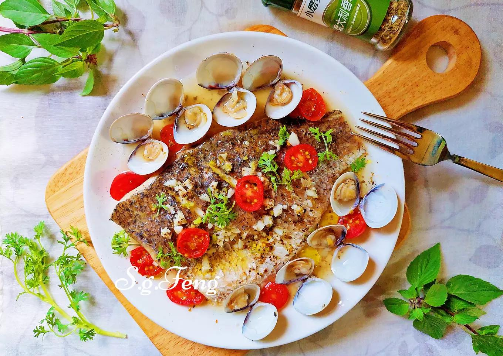

食材:肋眼牛排(200克)、鹽(適量)、黑胡椒(適量)、
調味香草青醬:新鮮巴西利(50克)、新鮮百里香(5克)、辣椒(一根)、新鮮迷迭香(兩根長長的)、蒜頭(五顆)、橄欖油(一杯)、海鹽(一小匙)
一:首先先把牛排在前一天晚上從冷凍放置冷藏解凍, 這樣是最好的解凍方式。要烹調時, 提前拿出,把牛排放置室溫下。正反兩面撒上適量的鹽和黑胡椒調味。
二:在平底鍋裡熱油, 等到油溫完全熱後, 把牛排放入煎至雙面金黃, 按下的時候大約是你用左手中指按自己虎口的軟硬度後就是三分熟。
三:煎好牛排後, 放在盤子上靜置, 讓肉汁重新分布一下。這時, 就可以把準備好的香草們,蒜頭,橄欖油等哩哩摳摳的放入果汁機內打勻。
四:等到牛排靜置後, 才可以切片, 這樣肉汁才不會流失, 淋上香氣逼人的香草青醬, 就可以上桌囉!!
"以上結束後就可以享用一道美味的香煎迷迭羊小排囉"!!!
 第一道西班牙海鮮烘蛋  第二道燻肉明蝦鑲干貝奶油芥茉醬佐燉蔬菜
 第四道義式香草蒸鱸魚